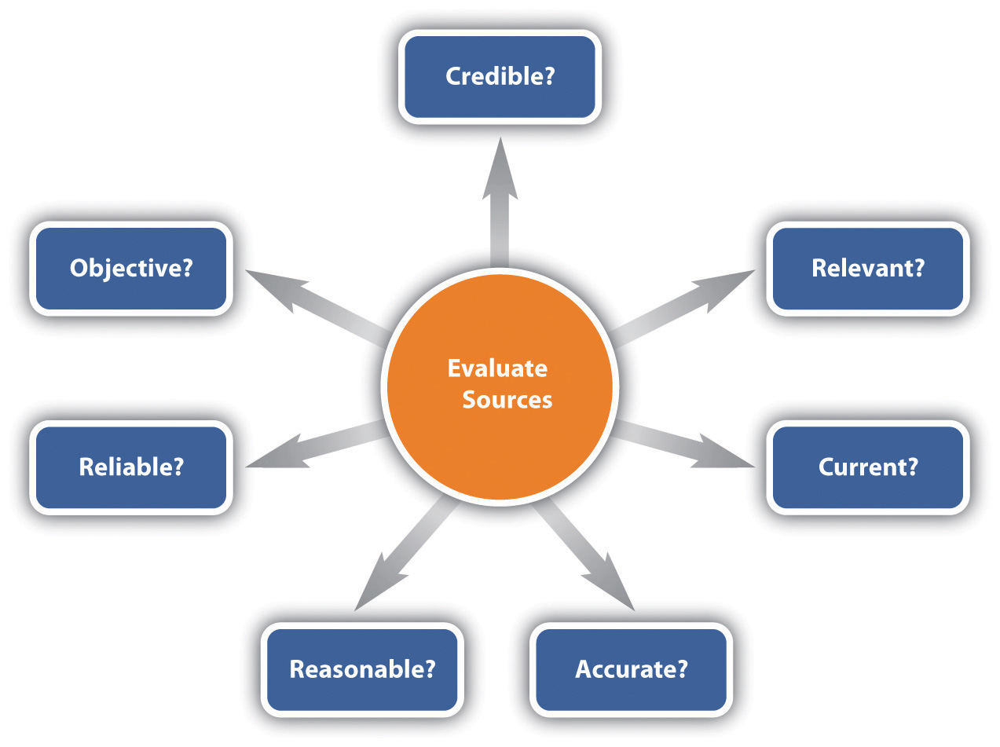
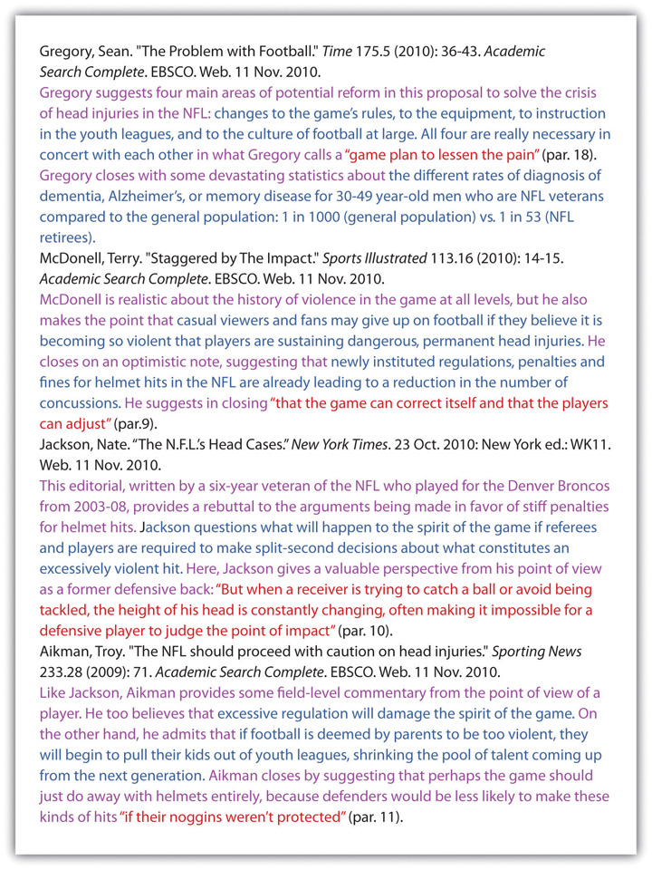

When you are given an assignment that requires you to conduct research, you should make an overall plan, choose search terms wisely, manage and evaluate the information you find, and make ethical choices regarding its use.
In Chapter 5 "Planning" and Chapter 6 "Drafting", you learned about choosing and narrowing a topic to arrive at a thesis, and you learned that once you have a thesis, you can plot how you will accomplish your rhetorical purposes and writing goals. But sometimes just coming up with a thesis requires research—and it should. Opinions are cheap; theses are not. Remember how important it is to be flexible; plans can change, and you need to be prepared for unexpected twists and turns during the research process. Making decisions about the issues in this chapter will give you a solid beginning toward conducting research that is meaningful to you and to your readers.
As you prepare to start researching, you should review your assignment to make sure it is clear in your mind so you can follow it closely. Some assignments dictate every aspect of a paper, while others allow some flexibility. Make sure you understand the requirements and verify that your interpretations of optional components are acceptable.
Figure 7.1
Clarify whether your assignment is asking you to inform, to interpret, to solve a problem, or to persuade or some combination of these four genres. This table lists key imperative verbs that match up to each kind of assignment genre.
| Key Words Suggesting an Informative Essay | Key Words Suggesting an Interpretive Essay | Key Words Suggesting a Persuasive Essay | Key Words Suggesting a Problem-Solving Essay |
|---|---|---|---|
|
|
|
|
If the assignment does not give you a clear idea of genre through the imperative verbs it uses, ask your instructor for some guidance. This being college, it’s possible that genre, like some other matters, is being left up to you. In such a scenario, the genre(s) you adopt will depend on what you decide about your purposes for writing. The truth is, genres blend into each other in real writing for real audiences. For example, how can you “take a position” about a social issue like teen pregnancy without doing some reporting and offering some solutions? How can you offer solutions to problems like climate change without first reporting on the severity of the problem, arguing for the urgency of the need for solutions, arguing that your solution is the best of several proposals, and finally arguing for your solution’s feasibility and cost effectiveness?
Take the case of Jacoba, who is given the following inquiry-based researchA type of assignment requiring exploration of a topic about which the student does not have a prior opinion. assignment, a genre of academic writing that is becoming increasingly common at the college level:
In an essay of at least twenty-five hundred words, I want you to explore a topic that means something to you but about which you do not yet have a clear opinion. Unlike other “research papers” you may have been asked to write in the past, you should not have a clear sense of your position or stance about your topic at the outset. Your research should be designed to develop your thinking about your topic, not to confirm an already held opinion, nor to find “straw men” who disagree with you and whose ideas you can knock down with ease.
Make no mistake, by the end of this process, if you have chosen a topic about which you’re really curious and if you research with an open mind, you will have plenty to say. The final product may be submitted in any number of forms (possibilities include an interpretive report, a problem-solving proposal, a manifesto-like position statement) but it must be grounded in source work and it must demonstrate your ability to incorporate other voices into your work and to document them appropriately (using MLA standards). And like any other writing we have done in this course so far, you are responsible for determining the audiences you want to reach and the purposes you want to achieve.
In this assignment, Jacoba and her classmates are intentionally given very little direct guidance and very few explicit instructions from their instructor about how to proceed. After some class discussion and some initial brainstorming on her own, she decides he wants to research and write about the crisis in solvency in Social Security. Prior to researching, she isn’t exactly sure how she feels about the issue, much less about an appropriate audience or purpose. She just knows she’s worried about her own aging parents and feels they deserve what’s coming to them. At the same time, she’s rankled that, in her early twenties, she has no expectation of ever seeing any of the money that’s been coming out of her paycheck every two weeks. The combination of uncertainty and interest she feels about the topic actually makes it ideal for this kind of inquiry-based research project.
Using the tips in Chapter 4 "Joining the Conversation", Jacoba puts together two preliminary statements of purpose intentionally at odds with each other.
Table 7.1 Statement of Purpose I
| Voice | I am writing as a daughter and young adult. |
| Message | I want to convey the message that we need to come up with realistic solutions for how Social Security needs to be fixed. |
| Audience | I want to write to people my parents’ age: 55 years old and up. |
| Attitude | My attitude toward the subject is positive toward Social Security and what it has meant to this country since the Great Depression. |
| Reception | I want my audience to have the tools they need to mobilize support for saving Social Security, for themselves, and for my generation. |
| Tone | My tone toward my readers will be concerned but determined to find solutions. |
Table 7.2 Statement of Purpose II
| Voice | I am writing as a concerned and informed citizen and voter. |
| Message | I want to convey the message that we need to come to terms with the fact that Social Security has outlived its usefulness and must be gradually phased out. |
| Audience | I want to write to members of Congress eager to reduce the size of government. |
| Attitude | My attitude toward the subject is negative toward the strain Social Security is placing on our budget deficit. |
| Reception | I want my audience to have the tools they need to persuade their colleagues in Congress to develop the political will to phase out Social Security. |
| Tone | My tone toward my readers will be respectful but assertive and persuasive. |
Jacoba knows that these are just two of the possible purposeful paths she may take over the course of her research process. A change to any of the six elements of her chart will mean writing up another statement of purpose. Using a research log, she will periodically reflect on how each of the elements of her preliminary statements of purpose are affected by each new source she encounters.
Although you might think that you can accomplish all of your research online from the comfort of your home, you should at least begin by visiting your school library. Talk to a research librarian about your planned paper and get his or her advice. You will likely learn about some in-library sources that would be helpful. But you will also probably discover some online sources and procedures that will be very beneficial. Another technique you can use for learning about research options is to talk to fellow students who have recently completed research projects. As always, you might be surprised what you can learn by such networking. Primary sourcesFirsthand source (e.g., in-person interviews and observations)., such as in-person interviews and observations, can add an interesting dimension to a researched essay. Determine if your essay could benefit from such sources.
Your writing venue might be predetermined for you. For example, you might be required to turn in a Microsoft Word file or you might be required to work on an online class site. Before you start, make sure you know how you will be presenting your final essay and if and how you are to present drafts along the way. Having to reroute your work along the way unnecessarily wastes time.
You will need to document your sources as you research since you clearly do not want to have to revisit any of your sources to retrieve documentation information. Although you can use the traditional method of creating numbered source cards to which you tie all notes you take, it makes much more sense to create digital note cards. Most college library databases include options for keeping a record of your sources. Using these tools can save you time and make the research process easier. Such sites also allow you to take notes and tie each note to one of the citations. Make sure to explore the services that are available to you. If you haven’t seen a college library database in some time, you will be pleasantly surprised at all the time-saving features they provide.
You can also create your version of digital note cards simply by making a file with numbered citations and coding your notes to the citations. If you choose, you can go online and find a citation builderOnline tool into which you can plug source information and receive a properly written citation in a chosen documentation style. for assistance. Once you put a source’s information into the builder, you can copy and paste the citation into your citation file and into the citation list at the end of your paper. Your college library’s databases include tools that will help you build citations in American Psychological Association (APA), Modern Language Association (MLA), or other styles. Similar tools are also available with no college or university affiliation, but these tend to have ad content and can sometimes be less reliable. Another, less commercial option is an online writing lab (OWL)A university-sponsored, ad-free, free-to-use site full of writing instructions.. OWLs are college-level writing instruction sites managed by university writing programs and usually open to public use. The most famous and, according to many, still the best, is managed by the Purdue Writing Program: http://owl.english.purdue.edu. Bookmark this site on your computer for the rest of your college career. You won’t regret it.
Begin with the amount of time you have to complete your project. Create a research and writing schedule that can realistically fit into your life and allow you to generate a quality product. Then stick with your plan. As with many time consuming tasks, if you fall off your schedule, you are likely to find yourself having to work long hours or having to make concessions in order to finish in time. Since such actions will probably result in an end product of lesser quality, making and keeping a schedule is an excellent idea.
As a rule, when you make a schedule, it is best to plan to spend a little time each day as opposed to long blocks of time on a few days. Although, on a long project, you might find it beneficial to have some lengthy days, as a rule, long hours on a single project do not fit into one’s daily life very well.
As you schedule your time, plan for at least one spare day before the project is due as sort of an insurance policy. In other words, don’t set your schedule to include working through the last available minute. A spare day or two gives you some flexibility in case the process doesn’t flow along perfectly according to your plan.
If you plan to have others proofread your work, respectfully consider their schedules. You can’t make a plan that requires others to drop what they are doing to read your draft on your schedule.
A research log is a great tool for keeping track of ideas that come to you while you are working. For example, you might think of another direction you want to pursue or find another source you want to follow up on. Since it is so easy to forget a fleeting but useful thought, keeping an ongoing log can be very helpful. The style or format of such a log will vary according to your personality. If you’re the type of person who likes to have a strict timeline, the log could be a chronologically arranged to-do list or even a series of alarms and reminders programmed into your cell phone. If, on the other hand, you’re a bit more conceptual or abstract in your thinking, keeping an up-to-date statement of purpose chart might be the way to go.
Describe your research plans for this sample assignment:
In ten to fourteen pages, compare the leisure activities that would have been typical of your ancestors prior to coming to the United States to your current-day leisure activities. Upload each version of your work to the class site for peer editing and review. The final version of the project is due to File Exchange in three weeks.
Include essay genre and length, how and where you will research, your writing venue, a method of documenting sources, and a day-by-day timeline.
Describe your research plans for this assignment:
In eight to ten double-spaced pages, take a stand on gay marriage and defend your position. Turn in a hard copy of your essay at the beginning of class one week from today.
Include essay genre and length, how and where you will research, your writing venue, a method of documenting sources, and a day-by-day timeline.
Describe your research plans for this assignment that is due at the end of the semester:
Work with a team of four to six people and create an online collaboration site. Each of you should choose a different topic related to technology benefits and review the related information. Complete your first draft with at least four weeks left in the semester. Then have each of your teammates review and make suggestions and comment. Complete all peer reviewing prior to the last two weeks of the semester. Gather all the reviews and make edits as desired. Limit your final paper to thirty pages and publish it on the class site by the last day of the semester.
Include essay genre and length, how and where you will research, your writing venue, a method of documenting sources, and a day-by-day timeline.
Your status as a student grants you access to your college library, and it is in your best interest to use it. Whether you are using your library online or in person, you will most likely need some guidance so that you know the research options available and how to access them. If you are attending a traditional brick-and-mortar college, the quickest way to learn about your library options is to physically go to the library and meet with a librarian. If you are attending school mostly or completely online, look for online tutorials offered by your college library. College libraries still have print holdings that are worth checking out, but the landscape is quickly going digital. In recent years, libraries have been digitizing their print holdings and spending an increasing percentage of their budgets on acquiring better and richer academic databasesAn extensive collection of related information that is available digitally. with vast holdings you can use for most of your research needs.
Within the array of online options available to you, the academic databases to which your library subscribes are generally more authoritativeDescribing a source that has been edited and often peer reviewed before being accepted for publication. because they have been edited and in many cases peer reviewed before being approved for publication. These sources often appeared in print before being collected in the database. However, databases can take you only so far in your research. If you have questions that need quick answers, especially involving facts or statistics, there’s nothing wrong with using popular search engines like Google or even online encyclopedias like Wikipedia, provided you use them critically. Confirm the truth of the information you find by finding corroboration from at least two other sources, and follow up on the sources listed in the sites to which you are directed. For more on evaluating online sources, see Section 7.5 "Evaluating Sources".
Along with the search engines, databases, and directoriesOnline list of websites relating to given topics., the Internet also offers a variety of additional tools and services that are very useful to you as a researcher. Some of these options include citation builders and writing guides, dictionaries, thesauruses, encyclopedias, RSS feedsAn online service that will send you information on a requested topic. (providing subscriptions to specific blogsOnline site where people share opinions in a relaxed environment. and podcasts), collections of famous quotations, government data, stock photo collections, collaboratively produced wikis and websites, and much more. An effective research project will likely combine source material from both academic databases and more popularly available online sites.
In addition to print and online sources, you might also wish to find some field sourcesPrimary source accessed in its natural setting., such as interviewing an expert, sorting through relevant documents, making observations, or attending an event that relates to your topic. For example, if you are researching the effects of inclusion on third grade students with special needs, you could add meaningful information to your paper by speaking with a local educator who has reviewed achievement scores before and after they have received inclusion services.
Once you’ve gotten to know more about your library’s online databases, use what you already know about popular search engines to decide which would be an easier method of finding reliable, trustworthy sources for the following information: an academic database or a popular search engine?
Whether you are searching research databases or conducting general online searches, the search terms and phrases you use will determine what information you find. Following some basic search term guidelines can make the process go smoothly.
When searching for articles within a database, start by using keywordsMain term relating to a topic. that relate to your topic.
Example: alternative energy
To expand your search, use synonyms or components of the initial search terms.
Synonym Example: renewable energy
Components Example: algae energy, wind energy, biofuel
Another technique you can use is to refine the presentation of your search terms using suggestions in the following table.
| Use multiple words. | Use multiple words to more narrowly define your search. | renewable energy instead of energy |
| Use quotation marks. | Place quotation marks around two or more words that you want to search for only in combination, never individually. | “renewable energy” |
| Use “AND” to connect words. | Use “AND” between words when you want to retrieve only articles that include both words. | algae AND energy |
| Use “OR” to choose one or the other. | Use “OR” to find information relating to one of two options but not both. This option works well when you have two terms that mean the same thing and you want to find articles regardless of which term has been chosen for use. | ethanol OR ethyl alcohol |
| Use “NOT” to eliminate likely options. | Use “NOT” to eliminate one category of ideas you know a search term will likely generate. | algae NOT food |
| Use “*” or “?” to include alternate word endings. | Use “*” or “?” to include a variety of word endings. This process is often called using a “wildcard.” | alternate* energy |
| alternate? energy | ||
| Use parentheses to combine multiple searches. | Use parentheses to combine multiple related terms into one single search using the different options presented in this table. | (renewable OR algae OR biofuel OR solar) AND energy |
When you find a helpful article or Internet site, look for additional search terms and sources that you can follow up on. If you don’t have time to follow up on them all when you find them, include them in your research log for later follow-up. When possible, copy and paste terms and links into your log. When you have to retype, take great care with spelling, spacing, and most of all, attributing direct quotations to their original source.
The aforementioned tips are general ideas for keyword searching. When you are searching within a database or a certain search engineA computer program that searches on the World Wide Web., pay attention to any search tips or help screens that present methods that work well with the specific database or search engine. For example, you may have the option to narrow your search to “full text” entries only or to refine it to texts published within a certain time frame.
When you are researching for an essay, your attitude and stamina are key to your success. If you let either of these issues get out of hand, you can seriously weaken your project. Before you begin what is essentially a month-long relationship with a topic, you should choose something that interests you, something about which you have an opinion. Even when it is on a topic you care deeply about, researching is often tedious and demands stamina. Assume from the beginning that the project will be time consuming and sometimes exhausting, so make sure to allot the needed time and energy to complete it.
If you feel strongly about a topic, you might find it a challenge to keep your attitude in check and to read your sources with an open mind. It is critical not to let your personal opinions drive the information you choose to include. Try to create a well-rounded paper. If all the sources you find appear to agree with your viewpoints, actively search out a different viewpoint to strengthen your paper. Or consider changing your path entirely because if there really isn’t a range of sources out there, you’re probably not working with an arguable topic. (See Chapter 6 "Drafting", Section 6.2 "Testing a Thesis" for more on how to test a thesis or topic for whether it is arguable.)
Along with keeping an open mind (attitude) and keeping to a schedule (stamina), you should, of course, read critically, using some of the guidelines discussed in Chapter 2 "Becoming a Critical Reader". In other words, you should evaluate the arguments and assumptions authors make and, when appropriate, present your evaluations within your paper. You can include biased information if you choose, but be certain to note the bias. This move might be appropriate in a persuasive essay if you are taking issue with a source with which you disagree. But be careful not to settle for too easy a target in such an essay. Don’t pick on a fringe voice in the opposing camp when there’s a more reasonable argument that needs to be dealt with fairly. If a source is simply too biased to be useful even as an opposing argument, then you may choose not to include it as part of your essay. Your basic principle of selection for a source, regardless of whether you agree with it as a matter of opinion, should be based on whether you think the information includes sound assumptions, meaningful evidence, and logical conclusions.
You also need to pose productive questions throughout the process, using some of the guidelines in Chapter 1 "Writing to Think and Writing to Learn". If you are writing on a topic about which you already have a very clear stance, consider whether there is common ground you share with your ideological opponents that might lead to a more productive use of your time and theirs. In general, persuasive essays are more effective if they also solve problems instead of just staking out an inflexible position based on a core set of inflexible assumptions. It’s not that you shouldn’t write about abortion or capital punishment if these issues mean something to you. It’s just that you don’t want to go down the same path that’s been followed by millions of students who have come before you. So how do you ask fresh questions about classic topics? Often by rewinding to the causes of the effects people typically argue about or simply by pledging to report the facts of the matter in depth.
| Old Question about Classic Topic | New Questions about Classic Topic |
|---|---|
| Is abortion acceptable under any circumstances? |
|
| Is capital punishment acceptable under any circumstances? |
|
| Is censorship acceptable under any circumstances? |
|
Choose a persuasive research topic of interest to you about which you already have a strong opinion. Find four sources:
Using the chart in Section 7.4 "Conducting Research" come up with questions to ask for each genre of a research essay for the following topics:
Returning to Jacoba’s project, we can see that each type of genre she might use to write her essay on Social Security will require different questions to ask, sources to pursue, evidence and support to use.
| Genre | Informative Essays | Interpretive Essays | Persuasive Essays | Problem-Solving Essays |
|---|---|---|---|---|
| Questions to ask | What are the present facts about Social Security and its solvency? | What has Social Security meant to American history, culture, politics, and government? | Should Social Security be saved or phased out? | Assuming it’s worth saving, how can we preserve Social Security in a way that doesn’t put us in more debt? |
| Types of sources | Government budget figures, projections, and reports | Historical records from the 1930s forward | Editorials and position papers from policy experts and think tanks | Articles and book-length works on fiscal policy and government entitlements |
| Evidence and support | Demographics, actuarial tables, and economic statistics | Political speeches and advertisements, congressional and presidential records | Arguments from Social Security proponents and opponents | Policy recommendations and proposals |
The more Jacoba reflects on the kind of research she wants to spend her time conducting and the kind of writing she’s most comfortable doing, the better off she’ll be.
When you evaluate a source, you need to consider the seven core points shown in Figure 7.2.
Figure 7.2
A source is relevant if it can contribute to your paper in a meaningful way, which might include any of the following:
When determining if a source is current enough to use, a general rule of thumb is that a source must be no more than ten years old. In some situations, very few sources exist that were published within the last ten years, so older sources can be used as long as you explain why the use of the older sources is acceptable and meaningful. Or perhaps you may be using older sources to establish a historical record of thoughts and statements on your issue in question.
Before you use a source, you need to satisfy yourself that the information is accurate. In print sources, you can use the author (if known) and the publisher to help you decide. If you think the author and publisher are legitimate sources, then you are probably safe in assuming that their work is accurate. In the case of online information, in addition to considering the author and publisher, you can look at how long ago the site was updated, if evidence is provided to back up statements, and if the information appears to be thorough. For either print or online sources, you can check accuracy by finding other sources that support the facts in question.
You can deem a source to be reasonable if it makes overall sense as you read through it. In other words, use your personal judgment to determine if you think the information the source provides sounds plausible.
Reliable sources do not show biasPrejudice or a nonobjective stance. or conflict of interestA situation where a person or organization might personally benefit from his, her, or its public actions or influence.. For example, don’t choose a toy company’s site for information about toys that are best for children. If you are unsure about the reliability of a source, check to see if it includes a list of references, and then track down a sampling of those references. Also, check the publisher. Reliable publishers rarely involve themselves with unreliable information.
A source is objective if it provides both sides of an argument or more than one viewpoint. Although you can use sources that do not provide more than one viewpoint, you need to balance them with sources that provide other viewpoints.
| .edu | Educational |
| .com | Commercial, for-profit, business |
| .gov | Government |
| .mil | Military |
| .net | Network |
| .org | Not-for-profit organization |
A credible source is one that has solid backing by a reputable person or organization with the authority and expertise to present the information. When you haven’t heard of an author, you can often judge whether an author is credible by reading his or her biography. If no biography is available, you can research the author yourself. You can also judge the credibility of an online source by looking at address extensionThe last three letters in an Internet address (e.g., .com and .edu).. As a rule, you need to be aware that .com sites are commercial, for-profit sites that might offer a biased viewpoint, and .org sites are likely to have an agenda. Take precautions not to be fooled by an address extension that you think would belong to a credible source. Always think and read critically so you aren’t fooled.
Some students view taking notes as a mindless procedure they have to go through to write a paper. Such an attitude is detrimental since good notes are a core factor that helps determine if you will write a good research project. In fact, next to building a solid research plan, the note taking process is perhaps the most critical part of your prewriting process.
When you are completing a research paper, you will use three types of note taking: summarizing, paraphrasing, and quoting. Since, at the note taking stage, you do not know for sure how you will use the information you find, you will not know for sure which kind of notes to take for which sources. Use the following general guidelines to decide:
You will use most of the information you find in either a summarized or paraphrased format. So use those formats as you write. Make your best guess about how you will want to use the information. Do not ever copy and paste from a source directly into your working files unless you intend to use the information as an exact quotation. If you do intend to use an exact quotation, use the quotations when you take the initial note.
Traditionally, notes were taken by hand on note cards and then filed by topic until you were ready to sort them out and put them in the order you would use them. Once the note cards were in order, you could begin typing your paper and inserting the information from the cards into the correct spots. You could still use that method if you want to. But to do so would add, depending on the size of your paper, hours, days, or weeks to the process. Since you most likely are not interested in increasing the amount of time needed to write your paper, you should keep your notes in a computer file (backed up elsewhere). Doing so will allow you to use copy and paste features to assemble and rearrange your notes. The digital format also allows you to easily add information as desired.
To organize your notes as you take them, assign each subtopic to a separate section within a file or to a separate file. Sorting your notes so that like topics are grouped together will help streamline the writing process.
Crashing computers can cause serious loss of data, so make sure you back up your work. You can use a variety of methods of backing up your work, including the following:
If you do not have a method of backing up your data, periodically print your work so that you won’t lose as much if you have a crash. You could then probably scan the pages using a text format and have the data back in your computer quite quickly. Even if you have to rekey the information to get it back into the computer, that process will be much faster than starting completely over.
As you take notes, make sure to include the source for each piece of information. Keep the complete citation in a master reference list that is either at the end of your paper or in a separate reference file. In addition, within your notes, insert the information you need for an in-text reference. (See Chapter 22 "Appendix B: A Guide to Research and Documentation" for correct formatting of in-text references within the different citation styles.) Including the necessary in-text information within your notes is another way of cutting down the time needed to write your paper.
For all notes you take, record the page(s) where you found the information. Doing so will assure you have the information at hand if you need it for your reference. In addition, having the page numbers readily available will allow you to easily revisit sources. So that you do not inadvertently leave a page number where you do not want it, add bolding and color to your page numbers to make them stand out.
As noted earlier, you should copy and paste only information that you intend to quote. By limiting your copying and pasting to quoted materials, you are not prone to forgetting that some text is copied and end up plagiarizingUsing another’s ideas without citing the source. without intending to do so. If you find it helpful, you can add a colored notation identifying each piece of information as a quotation, summary, or paraphrase. As with the page numbers, by using colored text, you can avoid copying and pasting your tags into your paper as you write. For an example of this kind of color-coding approach, see the annotated bibliography in Section 7.8 "Creating an Annotated Bibliography".
Another method of inadvertent plagiarism is to paraphrase too closely. You can avoid this pitfall by reading a paragraph and then, without looking back, writing about the paragraph. Unless you have a photographic memory, this method will result in you rewording the idea. When you finish writing, look back to make sure you included all aspects of the original text and to clarify that you depicted the ideas accurately.
When you are planning to quote an author’s exact words, follow these guidelines:
Three keys to referencing others’ ideas ethically are to know the difference between common knowledge and proprietary ideas, to be aware of how to properly summarize and paraphrase, and to understand the correct methods for citing sources. In addition, you need to make sure that material is available for use at any level.
Common knowledgeInformation that most people know and that does not require a citation. is that bank of information that most people know. Such information does not require a citation. One way to identify such information is to note that it is presented in multiple sources without documentation. Another identification method is to realize that you, along with most people you know, are aware of the information. For example, you can write that “Cheyenne is the capital of Wyoming” without needing a reference. On the other hand, if you were to note that there is a high rate of divorce in Cheyenne, you would need to cite that detail. Data about the divorce rate in Cheyenne are proprietary ideasInformation that most people do not know and that requires a citation..
When you summarizeTo use a few words or sentences to describe the key ideas of a text., you should write in your own words and the result should be substantially shorter than the original text. In addition, the sentence structure should be your original format. In other words, you should not take a sentence and replace core words with synonyms.
You should also use your words when you paraphraseTo use your ideas to inclusively present the ideas from a selection.. Paraphrasing should also involve your own sentence structure. Paraphrasing might, however, be as long or even longer than the original text. When you paraphrase, you should include, in your words, all the ideas from the original text in the same order as in the original text. You should not insert any of your ideas.
Both summaries and paraphrases should maintain the original author’s intent and slant. Taking details out of context to suit your purposes is not ethical since it does not honor the original author’s ideas.
Study the examples in the following table for clarification between summarizing, paraphrasing, quoting, and plagiarizing.
| Original text | Some dramatic differences were obvious between online and face-to-face classrooms. For example, 73 percent of the students responded that they felt like they knew their face-to-face classmates, but only 35 percent of the subjects felt they knew their online classmates. In regards to having personal discussion with classmates, 83 percent of the subjects had such discussions in face-to-face classes, but only 32 percent in online classes. Only 52 percent of subjects said they remembered people from their online classes, whereas 94 percent remembered people from their face-to-face classes. Similarly, liking to do group projects differs from 52 percent (face-to-face) to 22 percent (online) and viewing classes as friendly, connected groups differs from 73 percent (face-to-face) to 52 percent (online). These results show that students generally feel less connected in online classes. |
| Summarized text | Students report a more personal connection to students in face-to-face classes than in online classes. |
| Paraphrased text | Study results show a clear difference between online and face-to-face classrooms. About twice as many students indicated they knew their classmates in face-to-face classes than in online classes. Students in face-to-face classes were about two-and-a-half times more likely to have discussions with classmates than were students in online classes. Students in face-to-face classes were about twice as likely to remember classmates as were students in online classes. Students in face-to-face classes viewed group projects as positive about two-and-a-half times more often than did students in online classes. Students in face-to-face classes saw class as a friendly place 73 percent of the time compared to 52 percent for online classes. Summing up these results, it is clear that students feel more connected in face-to-face classes than in online classes. |
| Quoted text | The study showed that personal discussions are much more likely to take place in face-to-face classes than in online classes since “83 percent of the subjects had such discussions in face-to-face classes, but only 32 percent in online classes.” |
| Plagiarized text | Some major differences were clear between Internet and in-person classrooms. For example, 73 percent of the study participants felt they were acquainted with their in-person classmates, but only 35 percent of the participants indicated they knew their distance classmates. |
Citing sources is critical since you do not want to be guilty of stealing ideas from others, and using others’ intellectual property without giving them credit is, indeed, a form of stealing. A bonus that comes with citing sources is that aligning others’ ideas with your ideas adds credibility to your ideas and helps establish your ethosA writer’s credibility and trustworthiness, established by researchers through the responsible and ethical use of sources.. Also, when you address more than one viewpoint, you strengthen your viewpoint.
In order to know exactly how you should cite sources, you need to know the reference style you will be using. The most popular formats are American Psychological Association (APA), Modern Language Association (MLA), Chicago, and Council of Science Editors (CSE). You can read more about these different styles and others in Chapter 22 "Appendix B: A Guide to Research and Documentation".
Regardless of which citation style you use, you should follow the following general guidelines:
As you are searching for sources, be sure to determine that you can ethically use the material. As a rule, you can reference most text as long as you properly cite it. Images are another issue. When you search online for images, you will find many private and for-profit sources. You should not use these images without contacting the source and requesting permission. For example, you might find a picture of a darling little boy from someone’s personal unprotected photo page or a good picture of an orderly closet from a company’s web page. Using such photos just because you can access them is not ethical. And citing the source is not adequate in these situations. You should either obtain written permission or forgo the use of such images.
Consider these two sentences:
Explain whether each of these statements is common knowledge or proprietary and why.
To make the best use of your research time, thoroughly read each source that is clearly relevant and document all the pieces you might use from it so that you will have a good chance of not having to revisit it. But just in case, take care to bookmark the site (and additionally save it to a folder set up for your research project) so you can easily return to it later and collect the needed information.
Your research log should include an annotated bibliography of the sources you plan to use. Each entry should include the following elements:
For the citation, gather the following components:
If a source does not appear to be as relevant as you initially thought it would be, document the situation in your log and move on. Don’t try to jam it into the essay just because you spent time tracking it down. Good researchers and good writers know they’ll encounter a few dead ends and bad leads.
Here are a couple of entries Antonio makes in his annotated bibliography for an essay he is writing on head injuries in football. Using the same search terms (“helmets,” “NFL,” and “head injuries”), a search of Academic Search Complete in his college library nets him entries 1, 2, and 4, and a search on Google nets him entry 3. Drawing from the color-coding suggestion in Section 7.6 "Taking Notes", Antonio distinguishes between direct quotation (red), paraphrase (blue) and summary (purple), by using different font colors for each.
Figure 7.3
Pause for a few moments before beginning to amass your information into a first draft. Return to your statement(s) of purpose. Have any of the elements (voice, audience, message, tone, attitude, reception) changed as a result of your research? If so, write up an intermediate statement of purpose, and use it as a guide as you draft and as the basis for a writer’s memo you may be asked to submit with your draft.
Once you think you have an ample supply of materials, read through your subtopic files and consider the order of the different pieces. Consider the points you want to make in relation to the information you have found and begin typing comments between your notes to assure you have a solid plan in place when you start to make your outline.
Create an outline that begins with your thesis (or message). Include the subtopics as key elements. Under each subtopic, list your supporting points you have researched as well as the ideas you plan to add. When you are finished, evaluate your outline by asking questions such as the following:
Choose the best choice for each question.
Once you are finished taking notes, you should
Your outline should begin with
If you have notes that are relevant, but do not fit within the planned subtopics
Once you begin to make your outline, you should